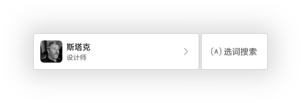
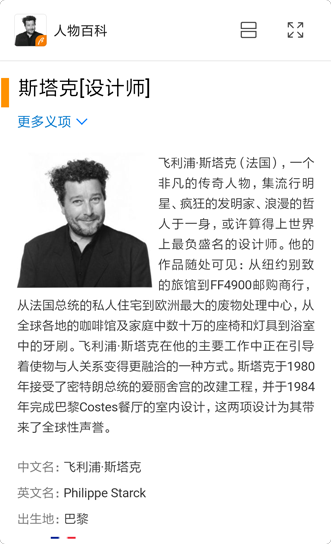

传送门
真正的一步直达
在MIUI 9系统任意应用中，你可以通过长按操作，触发系统对长按内容的智能分析，"传送门"会把相关的信息即刻传送给你，
极大的提高了跨应用获取信息的效率。
※“传送门”是MIUI实验室功能，需要用户主动开启
长按直达，即按即得
极简的开启方式，一个长按即可开启传送门，你要的内容便跃然屏上，即按即得。
长按直达，即按即得
极简的开启方式，一个长按即可开启传送门，你要的内容便跃然屏上，即按即得。



